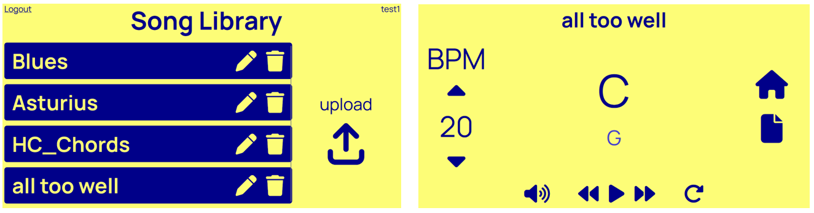
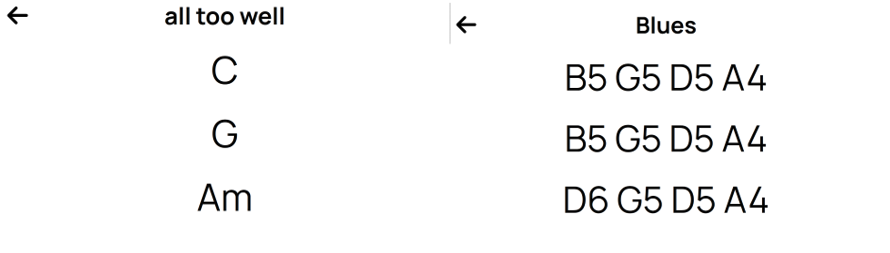
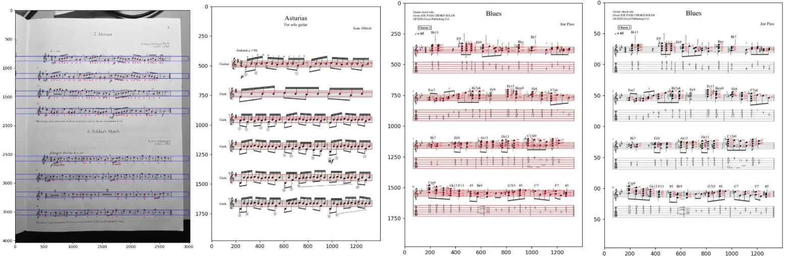
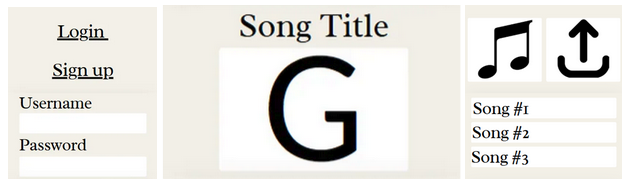
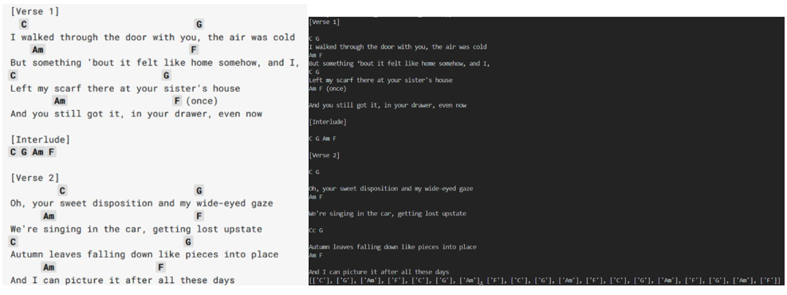
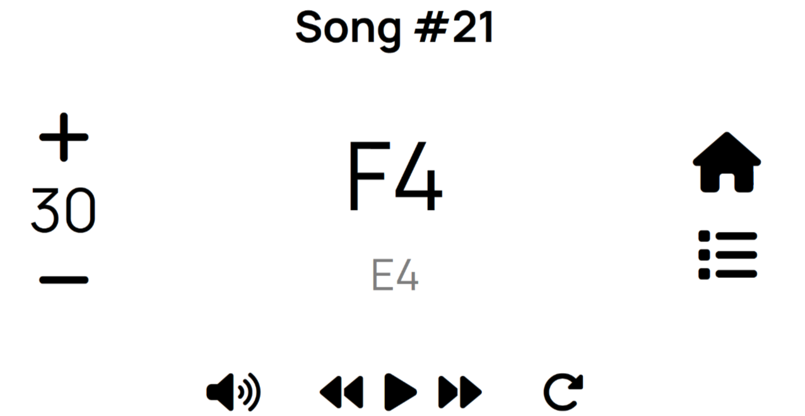
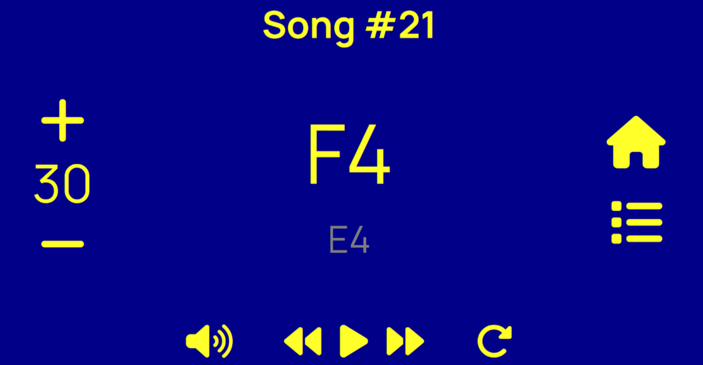
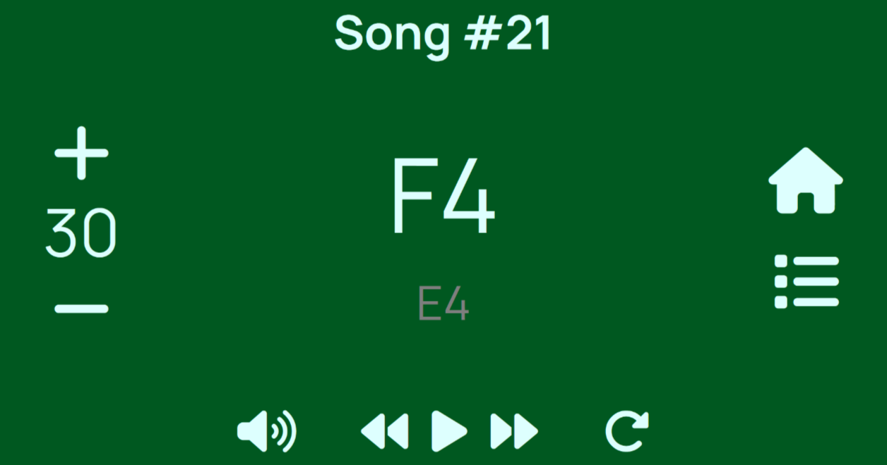
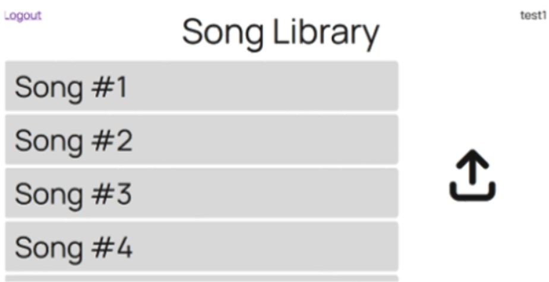

Background
For this project, our team was honoured to be a part of the IMPACT (Interdisciplinary, Mentorship, Practice, Applied, Community, Transformative) Initiative Project where our task was to design a product that would improve our client’s daily living.
The goal was for us to create a tool that allowed the client to continue their hobby of playing guitar. Since they were experiencing a gradual loss of hearing and vision, reading sheet music, especially chords, became difficult to do.
Therefore, we began our project with the following requirements for the design:
- Hands-free
- Provide audible feedback
- Portable
- Accessible
- Durable
After conduction reasearch, development, and iterative testing, the team produced its final prototype: Chord Vision, a website that interprets and displays sheet music.
The user would be able to upload an image of guitar chords or sheet music, and using image processing, the website will display chords into large print for the user to see. Once uploaded, the music data will be saved into an account which the user can access from any browser or account.


Main Page with Library and Various Note Display Features
In addition to just displaying chords, the prototype also allows the user to adjust:
- Volume
- Tempo
- Forward/Rewind
- Text-to-speech
- Music Note Format (Seen in the figure above)
Two outputs can be seen as they depend on the type of music sheet uploaded: For general guitar chords, the website detects the chord letter; for sheet music, the website displays the individual notes.
Contributions
In addition to inital brainstorm sketches and prototype generations, my main role was developing the sheet-music note detection function and implementing the functionality of the website, along with some minor styling changes.
At the start of the project, I worked on the image recognition function which could extract music note and chord information. This was done using the OpenCV Python library where its blob and line detection features were used to detect the notes and staff lines respectively.

Note-Detection Progression: From inital testing to chord detecton
Once the notes and staff were detected, the letter of the notes was determined by comparing the coordinate of notes to the location of lines. Refinements of this process mainly included improving the accuracy of blob (note) and line (staff) detection.
As the project progressed, I eventually helped with the front-end. This included:
- Linking Pages
- Uploaded Music Database (using SQLite and SQLAlchemy)
- Register/Login
- Library (Deleting, Uploading, Renaming)
- Text-to-Speech for Notes
- List of Notes/Chords
Design Process
After exploring our design space as much as possible and coming up with both mechanical and software option, the team decided on a website that could read sheet music.
The inital stage focused on the implementation and feasibility of our idea. (This version can be seen in the figure from the previous section.) At this point, the function only included detecting the top and bottom lines rather than all five, as well as using single notes instead of whole or half-notes.
At the same time, the prototype for the front-end was created in canva.

Canva prototype
Once the idea was proved feasible and we had a basic idea of what the main website would look like, the note detection function was further refined and the website began to be implemented with html/css.
However, we later realized that a second function would be more beneficial to guitar players. As a result, the Python OCR library was used to detect text from an image of guitar chords.

The program then compared the text to a list of common chords and returns a list of detected chords.
Finally, once the website was complete, we explored different UI themes in order to find colors with the highest contrast and clarity. Out of common accessibility palettes, we ended up choosing blue and yellow. Some minor icon changes were also made after feedback from testers.




Alternative color themes and inital library design
Addition features such as deleting and renaming songs were added in the later stages. Labels on the upload and tempo were also added for clarification.
Further Implementations
Note-Detecton Refinement: Although this function could detect notes to a high accuracy with certain sheet music, it was highly dependent on the image and needed more refinement in order to work for a wider variety of sheet music.
To do so, we would need to:
- Include the detection of accidentals (sharps, flats, neutrals, key signature)
- Detect bar lines, half and whole notes, and rests
- Detect clef (bass, treble, C)
Uploading Photo: To implement the team’s initial plan to include taking pictures rather than screenshots, a camera feature would be added to the website in addition to the file uploads.
This would also require further modifications with the image processing to account for photo lighting and angle variations.
User Features:
- Favourite Folder — A way for users to pin or saved frequently used songs
- Theme Customization — The ability to change interface colours and font size
- Music integration — Allows users to listen to the uploaded songs and play along with the music